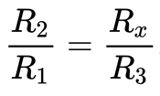
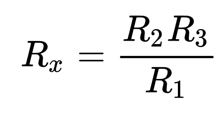

Мост Уитстона - это прибор, предназначенный для измерения неизвестного сопротивления в электрических цепях. Он вычисляет неизвестное сопротивление путем балансировки двух ветвей мостовой схемы, где одна ветвь содержит оба известных резистора, а другая ветвь содержит один известный (переменный) и один неизвестный резистор. Поскольку он оценивает неизвестное сопротивление в электрической цепи, он также известен как мост сопротивления. Мост Уитстона - очень надежный инструмент, поскольку он очень точно измеряет сопротивление.
Мост Уитстона работает по принципу нулевого отклонения, т. е. Через гальванометр не протекает ток, и его стрелка не показывает отклонения, отсюда и название "нулевое отклонение". В несбалансированном состоянии моста Уитстона, т.е. когда потенциал на гальванометре разный, гальванометр показывает отклонение, и когда мост становится сбалансированным путем замены переменного сопротивления, разность потенциалов на гальванометре становится равной нулю, т.е. равновесное состояние моста Уитстона.
Сопротивление одного из резисторов второй ветви изменяют до тех пор, пока показания гальванометра не станут равны нулю. По отклонению стрелки гальванометра в ту или иную сторону можно судить о направлении протекания тока на горизонтальной диагонали моста и указывают в какую сторону изменять регулируемое сопротивление резистора для достижения «баланса моста». Когда гальванометр показывает ноль, говорят, что наступило «равновесие моста» или «мост сбалансирован».
Из этого выходит, что:  , откуда выводим 
Где R1 - левый верхний резистор, R2 - левый нижний резистор, R3 - правый верхний резистор и Rx - искомый левый нижний резистор